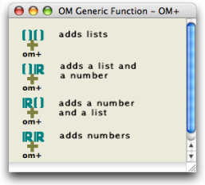
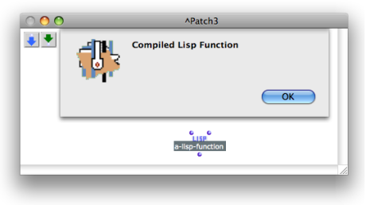

Navigation générale :
- Zoom

 OpenMusic Documentation
OpenMusic Documentation
Navigation :
Veuillez utiliser le bouton Retour de votre navigateur pour revenir au guide.
Attention, votre navigateur ne supporte pas le javascript ou celui-ci à été désactivé. Certaines fonctionnalités de ce guide sont restreintes.
Methods
Generic Function Editor

The OM+ generic function comprises four internal methods. The accepted types of arguments for this function are: list+list, list+number, number+list and number+number.
|
Double click on the icon of a function to open the generic function editor. This window provides :
|
The universal type, which means "any type", or "T" for "true" in Lisp is represented by this icon : . This means that the method accepts any type of argument.
For a Review of the Symbols Found in Function Editors :
Adding Methods to a Generic Function
The applications of a generic function can be extended by user-defined methods , so that it can accept new types of input arguments.
Adding Methods to a Function
Compiled Functions and Methods
The "compiled function" or "compiled method" messages appear when clicking on a Lisp function box or in a method icon within a generic function editor. This means the function is protected. It is internally defined in OM and cannot be modified through the graphic interface.
However, user-defined methods can be open in method editors.

Lisp functions cannot be open in the OM graphic interface.
Références :
Plan :
- Methods
Navigation :
Veuillez utiliser le bouton Retour de votre navigateur pour revenir au guide.
A propos...(c) Ircam - Centre Pompidou